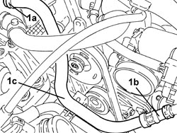
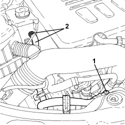

4130B54 RETURN PIPE FROM HEAT EXCHANGER PIPE TO POWER STEERING FLUID RESEVIOR - R.R.
- Path
- Procedures > 41 STEERING UNIT > 4130 POWER STEERING > 4130B POWER STEERING HYDRAULIC SYSTEM > 4130B54 RETURN PIPE FROM HEAT EXCHANGER PIPE TO POWER STEERING FLUID RESEVIOR - R.R.
- Kind
- repair procedure (removal / refitting; the operation number is the code)
- Applies to
- engines: 2.2 JTS, 2.4 JTD 20v; all production periods
- Interactive page
- https://sloeber94.github.io/elrnDB-aBrrSpdr/en/#/946002187
Applies to: engines: 2.2 JTS; all production periods
 Removing
Removing
 Refitting
RefittingOp. 1048A34 HOSE(S) FROM FLOW METER TO AIR SUPPLY CAPACITY CASE - R + R
- Draw off the power assisted steering fluid from the reservoir using a suitable syringe.
1. Loosen collar (1a), disconnect the fast-on connector (1b) and remove the return pipe from the heat exchanger pipe to the power steering fluid reservoir (1c).

Applies to: engines: 2.2 JTS; all production periods
Refitting
Removing- Place the return pipe from the power assisted steering box to the fluid reservoir back in its housing, connect and tighten the band.
Op. 1048A34 HOSE(S) FROM FLOW METER TO AIR SUPPLY CAPACITY CASE - R + R
Op. 0010T71 POWER STEERING FLUID CHECK LEVEL AND TOP UP IF NECESSARY
Applies to: engines: 2.4 JTD 20v; all production periods
Removing
Refitting- Draw off the power assisted steering fluid using a suitable syringe.
1. Disconnect the rapid connector for the pipe, heat exchanger side.
2. Loosen the band, disconnect the pipe from the power assisted steering fluid reservoir and remove it.

Applies to: engines: 2.4 JTD 20v; all production periods
Refitting
Removing- Connect the pipe to the heat exchanger pipe and to the power assisted steering fluid reservoir using the band.
Op. 0010T71 POWER STEERING FLUID CHECK LEVEL AND TOP UP IF NECESSARY